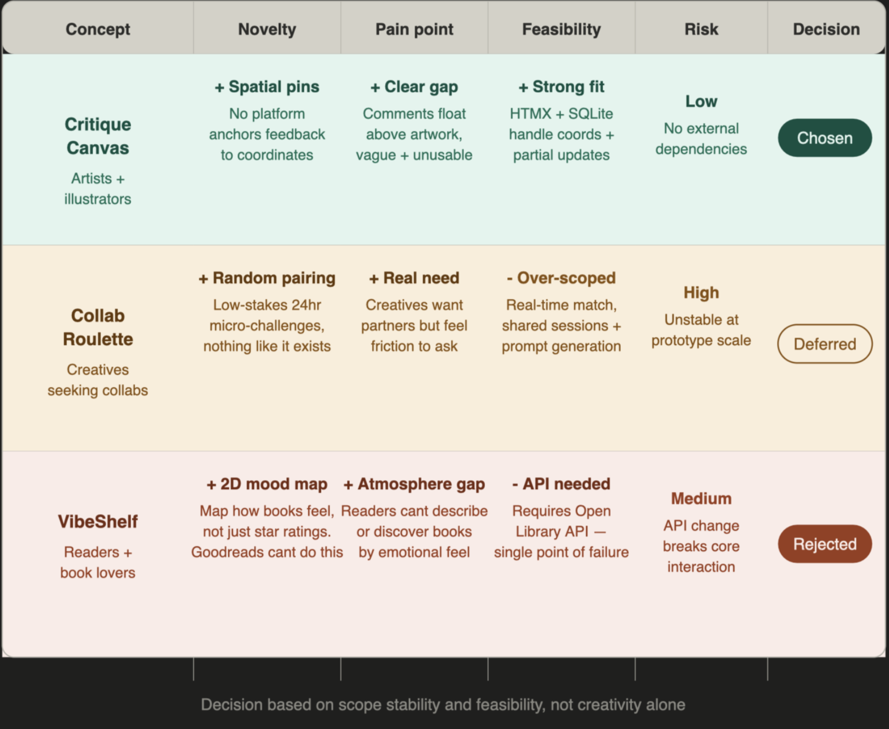
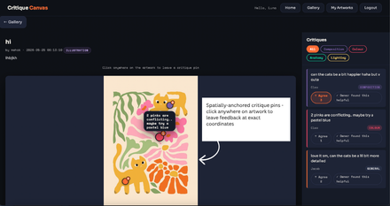

Blog 1 ended with three finalists. Collab Roulette, VibeShelf, and Critique Canvas all passed the brief's elimination criteria. This post is about the harder decision — and what making it revealed about the community.
Identifying the Real Problem
I focused on emerging artists and illustrators, a community I personally belong to. My early assumption was that artists need visibility and engagement. However, platforms like Instagram and Reddit already provide this. The real issue is not sharing work, but what happens after. Feedback is often vague ("nice colours") or non-specific ("anatomy feels off"), making it genuinely difficult to act on.
Before committing to this direction, I observed several online artist communities — Reddit's r/ArtFundamentals and r/learnart, Behance, DeviantArt, and Pinterest boards. The pattern was identical across all of them: comments floated below the image, disconnected from the work itself. The gap is structural, not accidental.
Existing platforms treat feedback as text detached from the artwork. This ignores how artists think — visually and spatially. In real studio critique, feedback is point-based: circling areas, drawing directly on work, pointing to specific regions. Digital platforms flatten this into comment threads, removing context and precision.
The issue is not lack of feedback, but lack of contextual, actionable critique.
Why the Other Two Failed
Collab Roulette was the most exciting idea. Randomly pairing two creatives for a 24-hour micro-challenge — nothing like it exists. But it required real-time matching, shared session states, and prompt generation. Together these pointed toward an unstable prototype — ambitious on paper, fragile in practice.
VibeShelf mapped how books feel to read on a 2D canvas. Genuinely novel — Goodreads cannot replicate it. But it depended on an external API, a single point of failure if it rate-limits or changes.
Critique Canvas aligned across every criterion: clear community pain point, no external dependencies, novel interaction that Instagram and DeviantArt structurally cannot offer, and direct mapping to the required stack — coordinate storage in SQLite, inline updates via HTMX, server-rendered templates in MojoJS.

Figure 1: Three finalists evaluated — decision based on scope stability and feasibility, not creativity alone.The decision was not based on creativity alone, but on scope stability and feasibility under real constraints.
Final Direction: Critique Canvas
Critique Canvas is an interactive feedback layer for artwork. Users upload an artwork; others click directly on specific areas; each click creates a comment linked to (x, y) coordinates; feedback renders as anchored annotations; HTMX enables live updates without page reloads. This shifts critique from general comments into spatial, precise feedback embedded directly within the artwork.

Figure 2: The core interaction — annotations anchored to specific regions, not floating in a comment thread below.Early Functional Requirements (Evolving)
Core — must have:
- Upload and persist artwork images
- Click-based annotation capturing coordinates
- Store annotations linked to user and artwork
- Render annotations at correct positions
- HTMX-driven inline updates
Secondary — not load-bearing: Category filtering and an accessible list view would enhance usability once the annotation loop is stable, but neither is essential. Visual density indicators were deprioritised entirely — they add complexity without improving critique quality.
Ambiguities and Open Questions
Several constraints remain unresolved:
- How reliably coordinates map across responsive layouts
- How to manage annotation overlap and visual clutter
- Whether mobile interaction requires a separate pattern
- How performance scales with dense annotation data
These are design constraints shaping later technical decisions — not problems to avoid.
Reflection
This process was about elimination rather than expansion. Critique Canvas emerged not as the most feature-rich idea, but as the only one satisfying the brief's core requirement: a community-specific interaction that cannot exist on generic platforms.
The requirements are intentionally incomplete — the next step is validating feasibility through data modelling, interaction design, and implementation constraints.